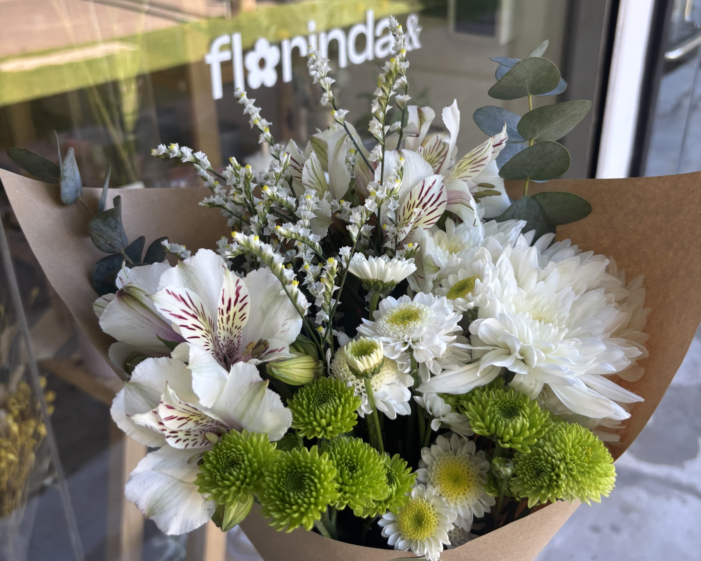
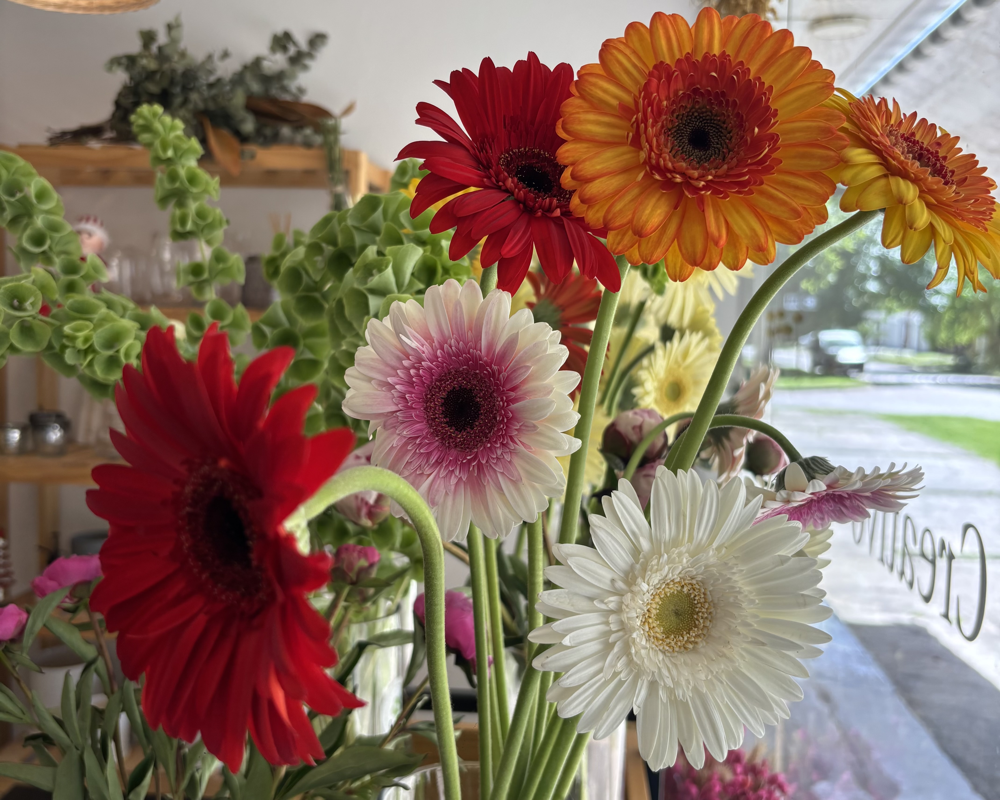
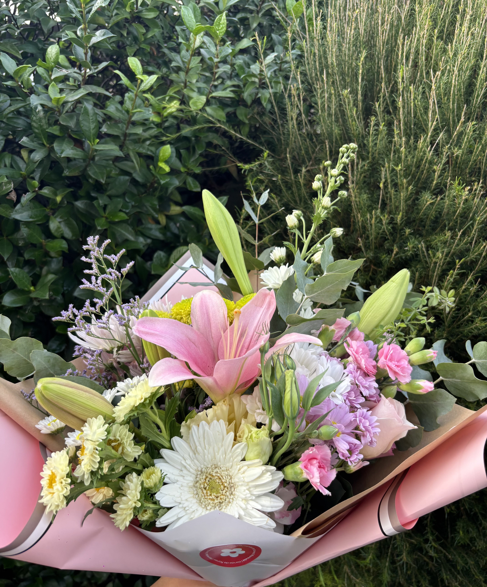

Florinda nació de algo simple pero poderoso: el amor por las flores, los detalles y los espacios que transmiten calma y belleza. Comenzó como un sueño que crecía puertas adentro, trabajando desde casa, rodeada de aromas, colores y muchísimas ganas. Con confianza, dedicación y el apoyo de quienes eligieron acompañar desde el primer ramo, ese sueño fue tomando forma hasta convertirse en un local propio, un espacio donde cada detalle está pensado para inspirar. En Florinda creemos que las flores tienen el poder de transformar momentos y ambientes. Por eso trabajamos con ramos de flores frescas de estación, seleccionadas cuidadosamente para ofrecer lo mejor de cada época del año, respetando sus tiempos, colores y texturas naturales. Cada ramo es único, armado a mano, buscando equilibrio, armonía y ese “algo especial” que hace la diferencia. Además, ofrecemos ramos secos, ideales para quienes buscan una opción duradera, con personalidad y estilo, perfectos para decorar cualquier rincón del hogar. Acompañamos nuestras flores con una selección de velas aromáticas y home sprays, pensados para crear atmósferas cálidas, relajantes y llenas de identidad. Pequeños detalles que convierten una casa en un hogar. Uno de los pilares de Florinda es la personalización. Nos encanta escuchar, interpretar ideas y crear arreglos a medida. Realizamos pedidos especiales con tonalidades a gusto, adaptándonos a cada ocasión, emoción o espacio. Ya sea para un regalo, un evento, una celebración o simplemente para darse un gusto, cada pedido es tratado con dedicación y sensibilidad. Florinda es más que una florería: es un proyecto que creció paso a paso, con pasión, confianza y mucho amor por lo que hacemos. Te invitamos a recorrer nuestro universo floral, dejarte inspirar y encontrar eso que estás buscando



